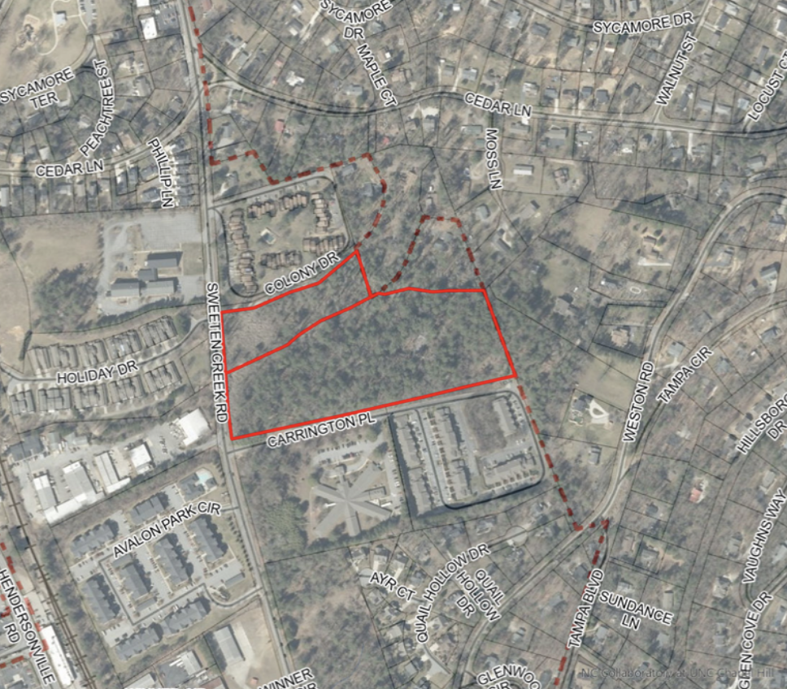

Asheville City Council - July 28th Meeting
August 4, 2026
Here’s what we found to be the most important housing-related items at Asheville’s City Council meeting of Tuesday, July 28, 2026.
3862 Sweeten Creek Road
Outcome: Approved
Votes:
Unanimous in favor
We’ve written recently about some housing developments in South Asheville that came before Asheville City Council for a “conditional zoning.” (For a refresher on what a conditional zoning is, you can check out this old recap blog post.) Here came another one, this one further south, near the airport, on Sweeten Creek Road.
And like some other recent conditional zonings, this one included potential financing from the federal LIHTC program, meaning that the homes would serve a range of income levels, all of them at most eighty percent of median area income (“80% AMI”). The development would also be bound to accepting housing choice vouchers. All of these things are good.

There was minor neighborhood opposition to this one, and we don’t believe concerns such as those around traffic were well grounded, but again we’ll note that South Asheville is in a peculiar spot. It has more developable land, arguably, than other neighborhoods, but it’s also outside of the “core,” the more grid-like and/or walkable areas of the city such as West Asheville and North Asheville, that might relieve some of the “development pressure” coming to bear down on South Asheville if those parts of town were to be moderately upzoned. On the other hand, we might argue that there’s no reason that South Asheville itself can’t become a kind of “node,” if the concern is about the roadways that commuters take north. In this case, 3862 Sweeten Creek Road is a close drive to all kinds of schools, retail, and other amenities that already exist.
In any case, City Council approved this one unanimously without much fuss.
A Brief Note: Rezoning a Portion of the Asheville Mall
Next on the agenda, an owner of the Asheville Mall appealed to the city council to revert the property’s zoning code to what it had been in the 2010s. Several years ago, it had been converted to the city’s new “Urban Place” designation.
Asheville For All doesn’t take positions on “straight rezonings,” which is when a property owner seeks to change the underlying zoning type for their lot without specifying what they intend to do in terms of (re)development. This was a particularly interesting case though, and if you’ve been following the discussion around the Urban Place (aka “Urban Centers”) reforms from five or six years ago, it’s worth reading further about.
In the end, this was a divided vote, with the rezoning request being approved four to two.
Antidisplacement Resolution
Outcome: Approved
Votes:
Unanimous in favor
As has been discussed on our blog, “displacement” is a hot topic, even if city leaders and citizens can’t seem to agree on what it is, what causes it, or how to combat it.
These difficulties aside, Asheville city staff is determined to try to calm residents’ fears around the idea, and also to heal decades-old wounds with the majority-minority neighborhoods that are most suspicious, perhaps rightly so, of any city-led attempts to direct or divert private investment or development. And as a step in what will presumably be a series of them, the city staff put forth a resolution for the city council to approve, which would affirm the city’s intentions towards reducing and/or preventing the displacement of vulnerable residents.
You can read the entire text of the resolution here. It’s worth noting that the actual text of the resolution was not presented or read during the meeting. We’re not sure if this is commonly done or not.
We think it’s worth noting because our mixed reaction to this resolution was entirely based on the wording of the resolution itself. Asheville For All is fully supportive of the city taking measures to reduce or prevent displacement. As we’ve argued before in front of Asheville City Council, we believe strongly that the city should be doing more, and doing it more quickly, to enact anti-displacement recommendations provided by the city’s 2023 Missing Middle Housing Study and the 2024 Affordable Housing Plan.
Our concern on Tuesday night was simply that some of the language in the resolution appeared more concerned with placating assumptions around the root causes of displacement than with setting the groundwork for enacting those aforementioned recommendations.
For example, consider the statement:
Whereas, the Asheville City Council wishes to take steps to properly balance the need for the provision of additional housing options and increasing affordability, while also proactively preserving the long-standing neighborhood identity and history of those communities most at risk of displacement . . .
The assumption behind this statement, in its calling for “balance,” is that displacement is (primarily) caused by the creation or facilitation of “additional housing options”—hence the need for balance. Or consider the following:
Whereas, the Asheville City Council recognizes the substantial harm caused to some individuals and neighborhoods by past government and private sector actions such as urban renewal, redlining, harmful zoning actions, and a lack of protective measures in the face of new development and reinvestment that results in gentrification and the displacement of existing residents . . .
We have no doubt that in many cities, a process has played out by which wealthy neighborhoods were “downzoned” while more vulnerable ones were “upzoned” or treated with “opportunity zone” overlays that upset land values and resulted in harmful speculation. But the assumption here, again, appears to be that new development is a significant threat to Asheville’s most vulnerable residents, when all of the aforementioned studies appear to suggest otherwise. Against the spirit of the 2023 Missing Middle Housing Study and Displacement Risk Assessment and the 2024 Affordable Housing Plan, this resolution makes no nods to the idea that “new development,” if encouraged or facilitated broadly across the city, is an anti-displacement strategy, or that offering “additional housing options” is the single most important scalable solution for increasing housing affordability.
We understand why City Council approved this resolution. (They did so unanimously and without much discussion.) We hope that they, and future councils, will take the intent of the resolution seriously without getting too tangled up in the language.
What’s Next?
We believe that the city government is trying to show good faith towards those in the city who are skeptical of housing development for a very particular reason: Asheville is preparing to pass some very modest pro-housing reforms to its residential zoning types.
In response to Asheville For All and others highlighting the city’s inaction on “middle housing” reforms last winter, city staff have been moving forward three zoning text amendments:
First, the city would finally remove costly parking mandates from residential neighborhoods. (Asheville eliminated most of these from most of its commercial zoning classifications last year.) Because of the recent passage of North Carolina’s H162, this is now just a formality.
Second, the city would legalize duplexes citywide. While falling short of dramatically increasing the city’s capacity for multi-family housing, this would effectively end single-family-only zoning.
Third, the city would allow for slightly larger accessory dwelling units (ADUs).
These proposed reforms are less than what the city needs. They’re important nonetheless. And it’s quite possible that they will be heard in front of the Asheville City Council by September.
Additional Media Coverage
- Mountain Xpress: “Residents and Council raise questions about proposed updates to city bus routes”
- Blue Ridge Public Radio: “Council approves Asheville Mall rezoning”